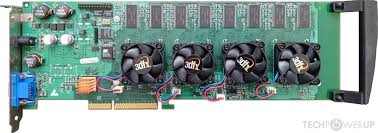

Rise of Consumer GPUs (1990s-2000s)
In 1991, S3 Graphics introduced the S3 86C911, named after the Porsche 911 to signify its promised performance boost. By 1995, most PC graphics chips included 2D acceleration, surpassing expensive general-purpose graphics coprocessors. Throughout the 1990s, 2D graphics acceleration evolved with advancements in manufacturing, and APIs like Microsoft's WinG and DirectDraw enabled 2D game hardware acceleration.
Tseng Labs ET4000/W32p
In the early and mid-1990s, real-time 3D graphics became increasingly common in arcade, computer, and console games, which led to increasing public demand for hardware-accelerated 3D graphics.
Initially, attempts at low-cost 3D graphics chips, such as the S3 ViRGE and ATI Rage, were limited by integrating 3D features onto existing 2D accelerators. Discrete boards like PowerVR and 3dfx Voodoo initially handled 3D graphics, but as technology progressed, integrated chips like NVIDIA's RIVA 128 emerged. Microsoft's DirectX (1995) and OpenGL (early '90s) API efforts facilitated GPU development, eventually leading to unified driver standards and support for hardware-accelerated texture mapping, lighting, and Z-buffering. The NVIDIA GeForce 256 (1999) was the first consumer GPU with hardware-accelerated T&L, solidifying the transition to modern GPUs.

Voodoo 5-6000 Prototype
The 2000s saw a dramatic transformation in GPU technology, driven by the growing popularity of PC gaming and the demand for more realistic and immersive experiences. Companies like NVIDIA and ATI (later acquired by AMD) released groundbreaking GPUs that supported advanced 3D rendering techniques such as bump mapping, anti-aliasing, and hardware T&L (transform and lighting).
NVIDIA’s GeForce series and ATI’s Radeon series quickly became dominant forces in the market. GPUs started to evolve beyond simple graphics rendering tools, becoming critical components for general-purpose computing (GPGPU) tasks. The introduction of programmable shaders and the launch of NVIDIA’s CUDA in 2006 enabled GPUs to be used for a wider range of applications, from scientific research to video processing.
GeForce3 Ti 500
Top